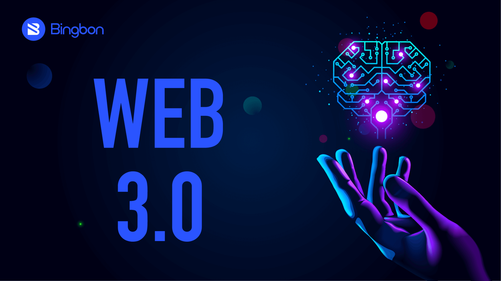

Article 2
C'est quoi le Web 3.0 ?

Le Web 3.0, également appelé "Web sémantique" ou "Web intelligent", est une évolution du Web actuel qui vise à améliorer la façon dont nous interagissons avec les informations en ligne. Le Web 3.0 est souvent décrit comme la prochaine étape de l'Internet, car il repousse les limites de la connectivité, de la technologie et de l'innovation pour fournir une expérience en ligne plus riche, plus intuitive et plus utile.
Le Web 3.0 est basé sur trois principaux piliers : l'intelligence artificielle, la blockchain et l'Internet des objets. Ces technologies se combinent pour offrir un environnement en ligne plus intelligent, plus décentralisé et plus sécurisé.
L'intelligence artificielle est un élément clé du Web 3.0. Elle permet aux machines de comprendre le contenu et le contexte des données en ligne, ainsi que de prendre des décisions en fonction de cette compréhension. L'IA permet également une personnalisation plus précise des résultats de recherche et une analyse plus fine des données.
La blockchain, quant à elle, est une technologie qui permet de stocker et de transférer des données de manière sécurisée et décentralisée. Elle est souvent utilisée pour les transactions financières, mais elle peut également être utilisée pour stocker des données telles que des identités numériques ou des contrats intelligents. La blockchain permet une transparence accrue, une plus grande sécurité et une réduction des coûts.
L'Internet des objets (IoT) est un réseau de dispositifs interconnectés qui peuvent communiquer entre eux et avec le monde extérieur. Les appareils IoT peuvent être des voitures, des capteurs environnementaux, des appareils ménagers intelligents, etc. L'IoT permet une collecte de données en temps réel, une automatisation accrue et une efficacité opérationnelle améliorée.
En combinant ces trois technologies, le Web 3.0 vise à offrir une expérience en ligne plus personnalisée, plus intelligente et plus sécurisée. Les entreprises peuvent utiliser le Web 3.0 pour offrir des services et des produits plus pertinents à leurs clients, tandis que les consommateurs peuvent profiter d'une expérience en ligne plus intuitive et plus utile.
Cependant, le Web 3.0 soulève également des questions sur la vie privée et la sécurité des données. Avec des systèmes plus intelligents et plus connectés, il est important que les entreprises et les gouvernements s'assurent que les données sont utilisées de manière responsable et éthique.
En conclusion, le Web 3.0 est une évolution du Web actuel qui vise à améliorer la façon dont nous interagissons avec les informations en ligne. Il est basé sur l'intelligence artificielle, la blockchain et l'Internet des objets, et il promet une expérience en ligne plus personnalisée, plus intelligente et plus sécurisée. Toutefois, le Web 3.0 soulève également des questions importantes sur la vie privée et la sécurité des données, qui doivent être abordées de manière responsable et éthique.